11. Factual group-count badge
Kept after independent screenshot review
Reviewer found the count compact, aligned and informative without competing with actions.
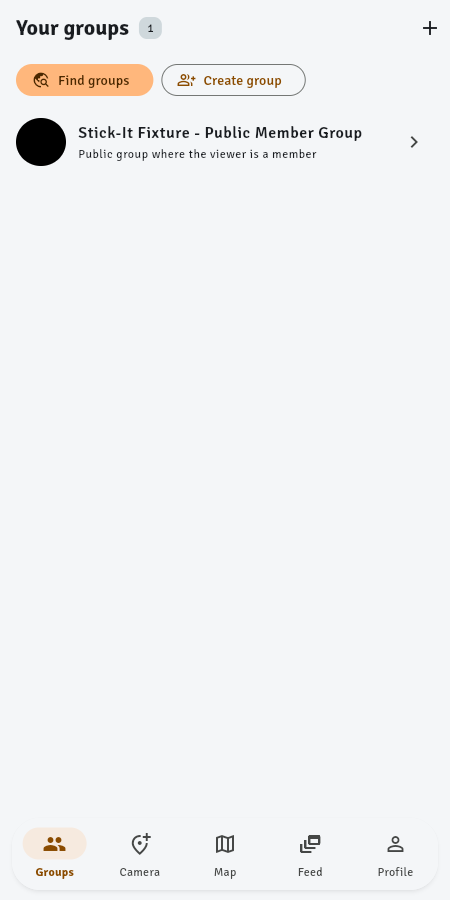
Kept after independent screenshot review
Reviewer found the count compact, aligned and informative without competing with actions.

Kept after independent screenshot review
Reviewer found both paths clearer and the additional mobile space justified.
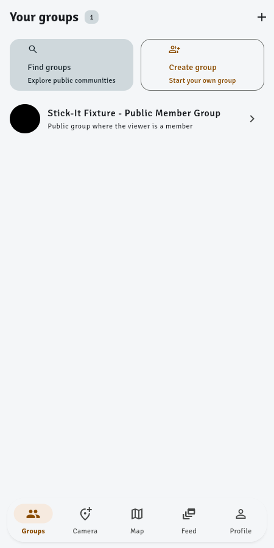
Reverted after independent screenshot review
Saving 8 pixels did not justify removing destination labels and reducing discoverability.
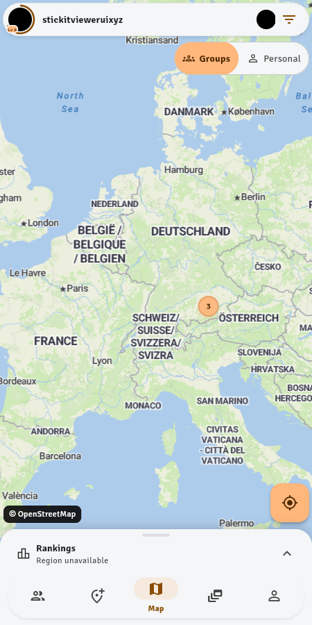
Reverted after independent screenshot review
Reviewer found the default selected fill less obvious than the existing strong selected pill.
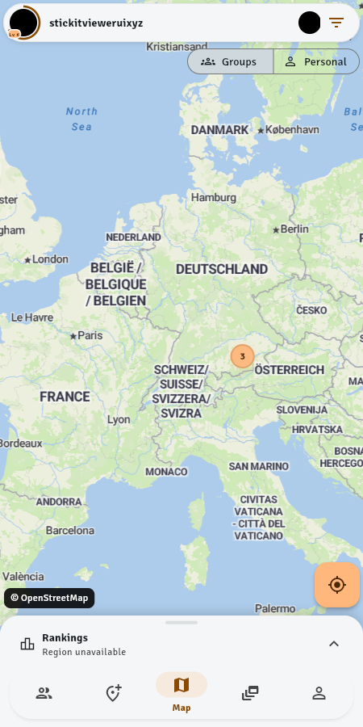
Kept after independent screenshot review
Reviewer found the label discoverable, professional and comfortably fitted in the header.
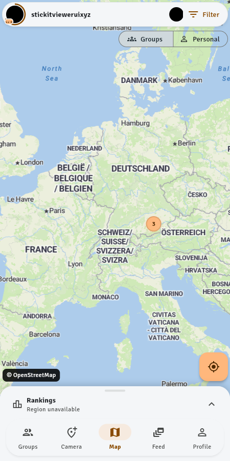
Kept after independent screenshot review
Reviewer found the subtle outline grouped photo and metadata without distracting from content.
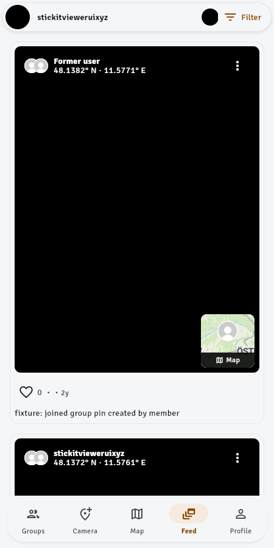
Reverted at user request
Reverted at user request: restore the feed Map/Photo thumbnail selector.
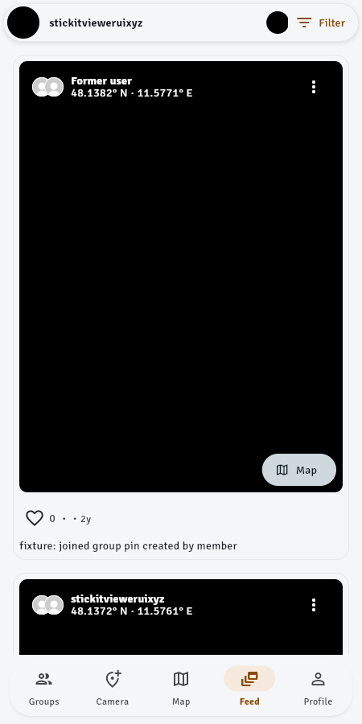
Kept after independent screenshot review
Reviewer found stronger scanning hierarchy and less visual weight while preserving grouped rows.
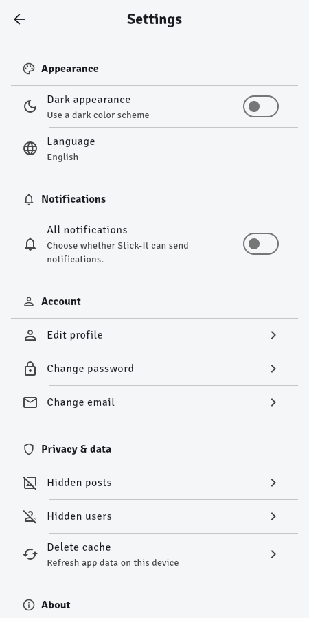
Reverted at user request
Reverted at user request: restore the icon-only current-location action.
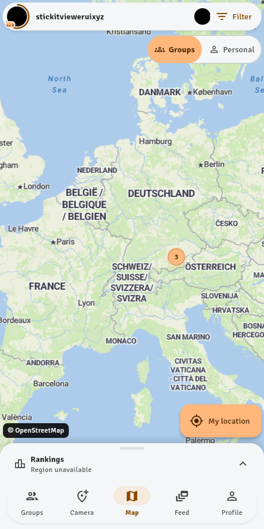
Kept after independent screenshot review
Reviewer found reclaimed width useful while labels remained clear. Toggle already includes explicit Collapse/Expand tooltips.
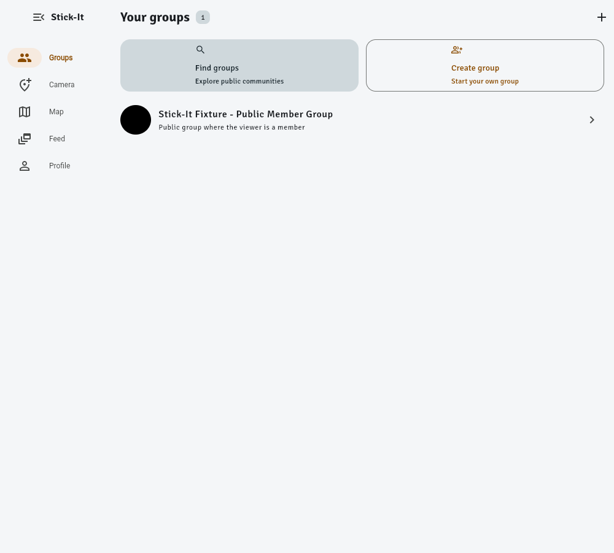
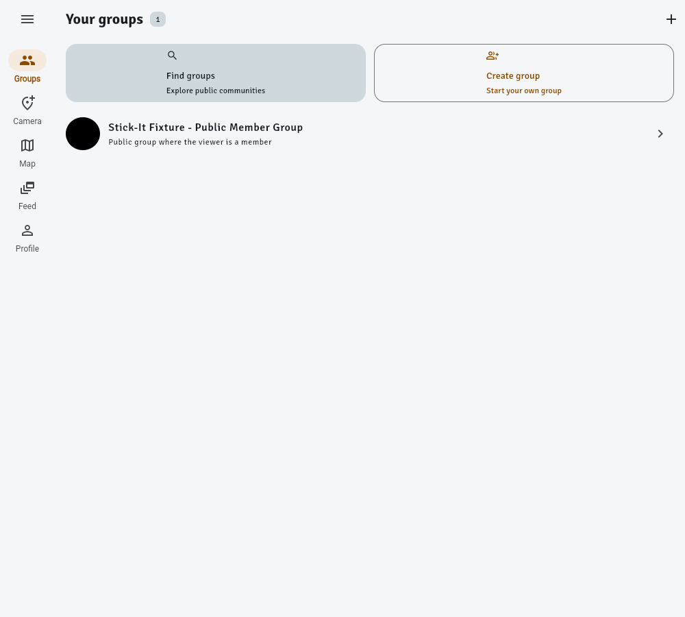